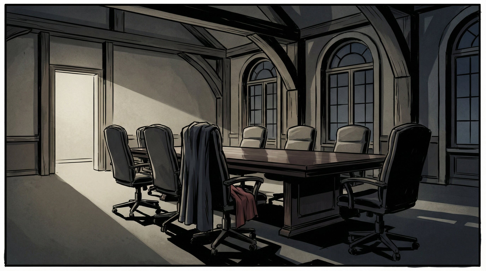

Building a Setting Reference Pipeline for AI Scene Generation

This week I tackled one of the more subtle but frustrating problems in AI-assisted visual storytelling: spatial consistency. When you're generating a sequence of images for a screenplay, the same conference room shouldn't look completely different between shots. The table shouldn't jump from the left side to the right. The doorway shouldn't vanish between scene 2 and scene 4.
I've been building FlowBoard, a node-based editor for screenplay-to-image generation, and we already had a character portrait reference system working. Feed the AI an image of your protagonist, and it'll keep them looking consistent across scenes. But settings? Those were still the wild west.
The Problem with Scene-as-Reference
My first instinct was simple: just use a generated scene as the reference for other scenes in the same location. Scene 1 of the conference room becomes the reference for scenes 2, 4, and 5. Makes sense, right?
It kind of worked. The spatial layout stayed more consistent. But there was character bleed—the people in the reference image kept leaking into new scenes where they didn't belong. A character who should have left the room would show up as a ghost in the background, or the AI would try to maintain their position even when the new prompt described different characters.
Clean Room, Clean References
The fix was counterintuitive but effective: generate empty room references. No characters. Just the space itself, with all its props, furniture, and incidental details (like that cloth draped over the chair that establishes this is definitely the same room).
I built this into the pipeline as find_references_for_setting()—it looks for images in the SettingSheets/Output/ directory with filenames matching the setting ID. Wire up a setting reference, and the generator now tells the AI: "This is what the room looks like. Match this spatial layout."
# Example: wire_setting_refs() discovers and links setting references
def find_setting_images(settings_dir: Path) -> dict[str, list[Path]]:
"""Find all setting reference images organized by setting ID."""
refs = {}
for img in settings_dir.glob("*.png"):
# Extract setting ID from filename like "conferenceroom_wide.png"
setting_id = img.stem.split("_")[0].lower()
refs.setdefault(setting_id, []).append(img)
return refsMulti-Angle References
The system also supports multiple reference angles per setting. For the conference room, I generated both a wide establishing shot (through the doorway) and a table-level angle. The idea is that Gemini can reason about the spatial relationships—if it sees the room from two perspectives, it builds a stronger mental model of the space.
Early tests are promising. The images feel more grounded, like they're happening in a real place rather than a series of similar-but-not-identical AI hallucinations.
The Bugfix That Embarrassed Me
While implementing this, I discovered a bug that had been there for weeks: the Location/Setting: line was being collected from scene data but never actually added to the prompt text. Settings were being tracked internally but never communicated to the image model.
Which means all my careful setting descriptions were doing exactly nothing. Sometimes the simplest bugs are the ones that hide the longest.
What's Next
The pipeline works end-to-end now—CLI and FlowBoard UI both support setting references. Next steps are to run a full test on the complete D8 scene (5 shots in a conference room) and then tackle the B3 Courtroom from another project, which has 6 different settings to test against.
The goal is making AI-generated visual sequences feel less like a slideshow and more like a coherent visual space. One empty room at a time.